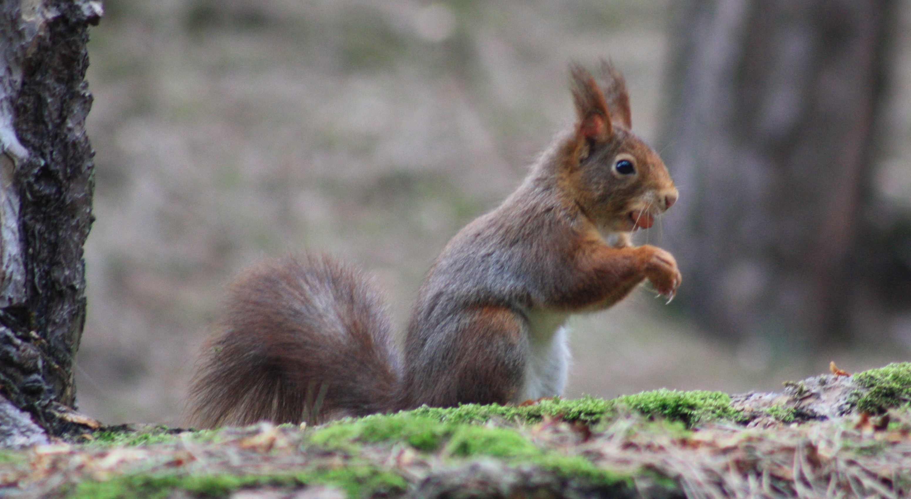
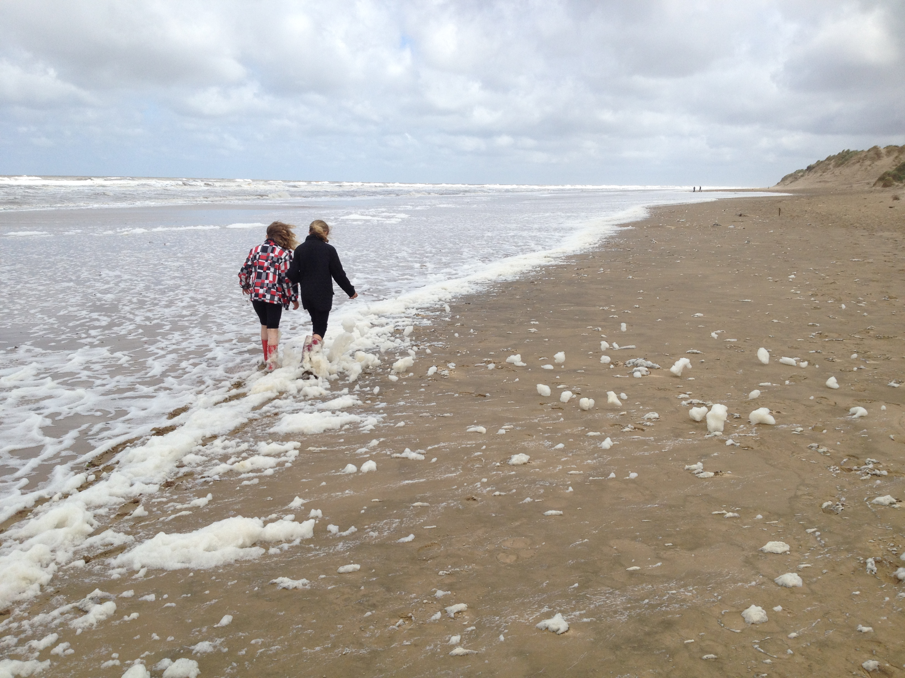
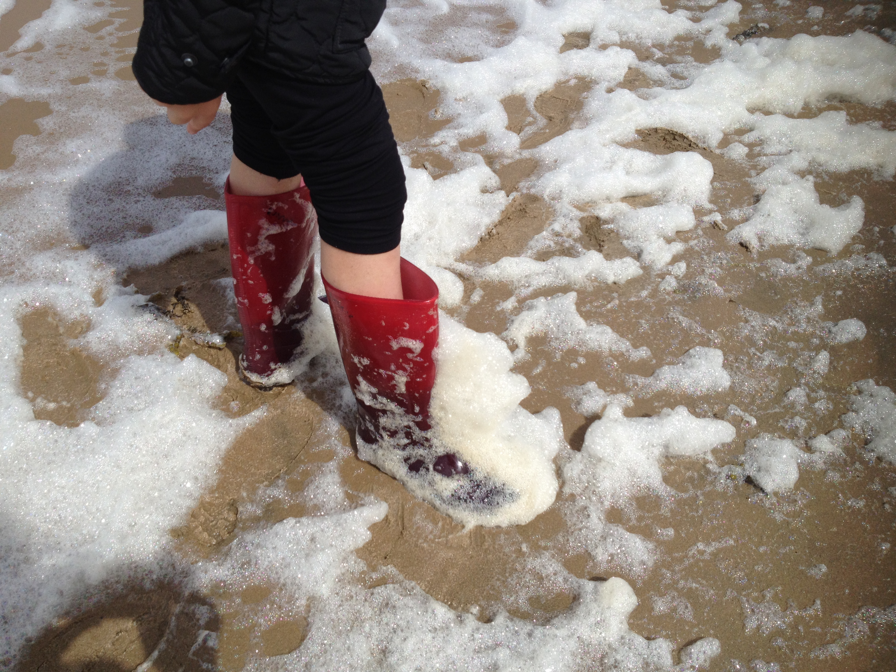

I'm seeing red...
08-Jun-2017 | Milku
visiting the squirrels at Formby.

It's Day 8 of 30 Days Wild. Because my little humans have returned to school, they'll be getting closer to nature later. I'll update you on that tomorrow. In the meantime, I still have to tell you about what they did yesterday when they ventured into the great outdoors.
They headed to the National Trust site at Formby. There was great excitement when they spotted a picture of their sister on the side of the National Trust information trailer. It had been taken last year when they all joined in a great sand castle building event run by the National Trust.

Once they'd settled down, they ventured into the pine woods in search of red squirrels...and were lucky enough to spot a couple hard at work feeding. My sort of creatures.
They enjoyed looking at the various birds in the woods and collecting a few seeds from the pine cones littering the woodland floor. Guess what a future activity is likely to be...as if we haven't got enough trees growing already!
Then they headed to the beach. Really, they'd hoped to see the prehistoric footprints, but the sea hadn't gone out far enough. Then they thought they might try to look at where coastal erosion has exposed the dumps of tobacco waste, but they roamed in the wrong direction. Oh well. They'll just have to go back because I want to hear more about all of that.
They had a good walk along the shore line though. Good job they'd taken their wellington boots with them. The wind and tide had left a thick line of foam all along beach. They couldn't resist scampering through that.
